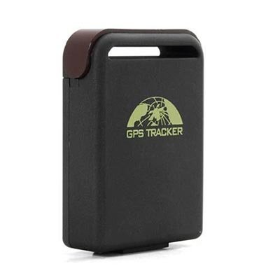
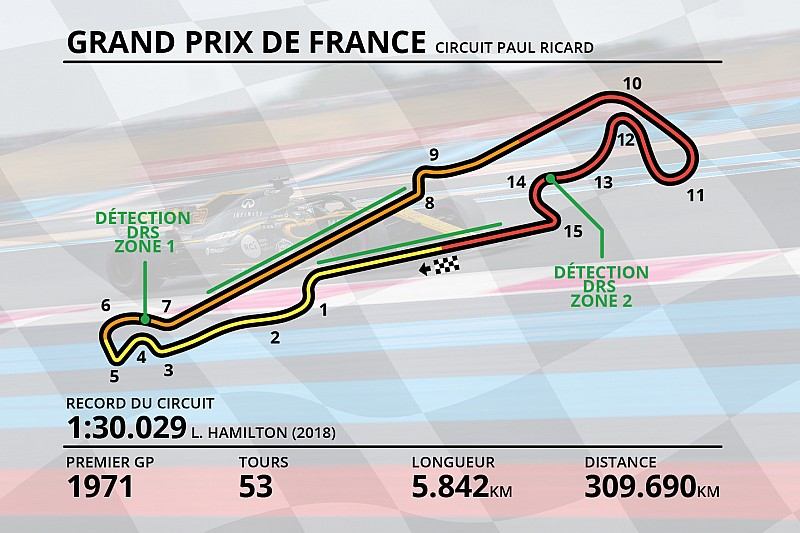
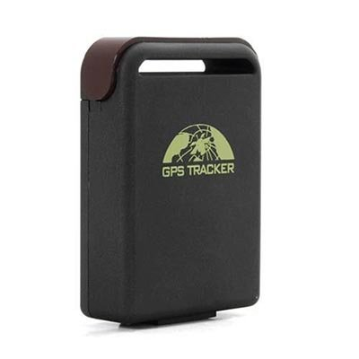
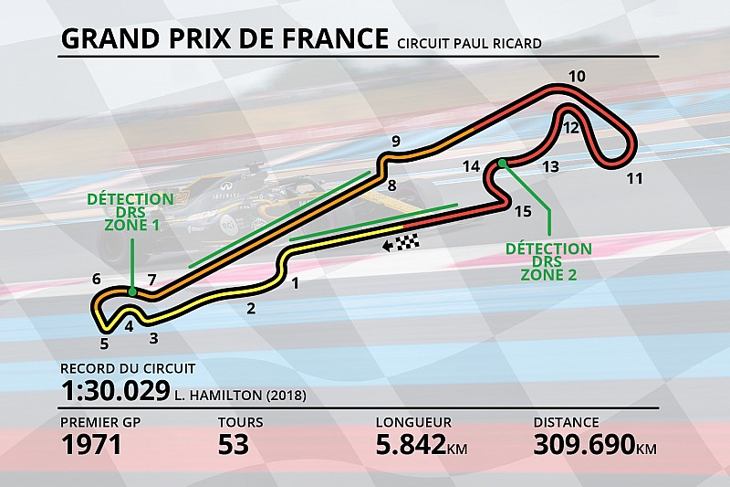

Fonctionnement et fonctionnalités détaillées :

GeoRace fonctionne grâce à deux composantes : premièrement un petit boitier équipé de capteurs et d'un tracker GPS, qui vont récolter les informations. Deuxièmement, l'application, qui va être capable de récupérer les informations du boitier grâce au WIFI et de les analyser.

L'application GeoRace va ensuite convertir les données brutes du tracker en données exploitables : vitesses, chronomètres, courbes, ... L'app connait tous les circuits autour du globe et est capable de vous fournir les bonnes courbes à prendre en virage.

GeoRace fonctionne grâce à deux composantes : premièrement un petit boitier équipé de capteurs et d'un tracker GPS, qui vont récolter les informations. Deuxièmement, l'application, qui va être capable de récupérer les informations du boitier grâce au WIFI et de les analyser.

L'application GeoRace va ensuite convertir les données brutes du tracker en données exploitables : vitesses, chronomètres, courbes, ... L'app connait tous les circuits autour du globe et est capable de vous fournir les bonnes courbes à prendre en virage.